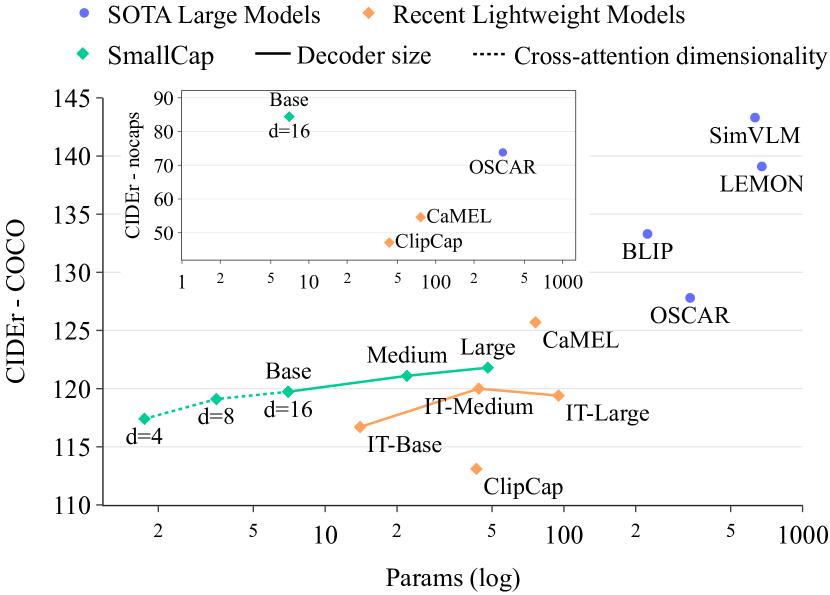
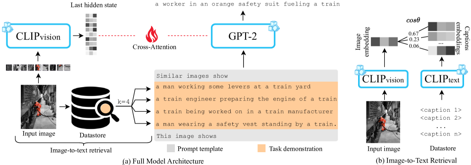
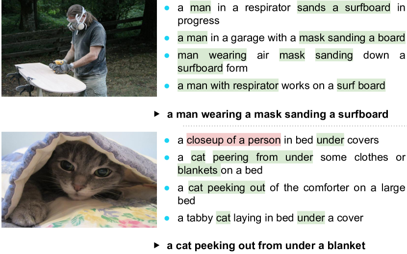
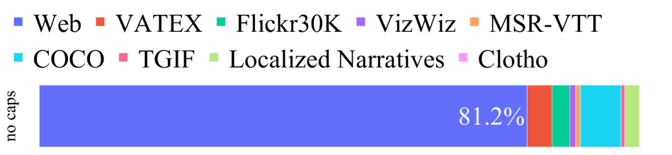
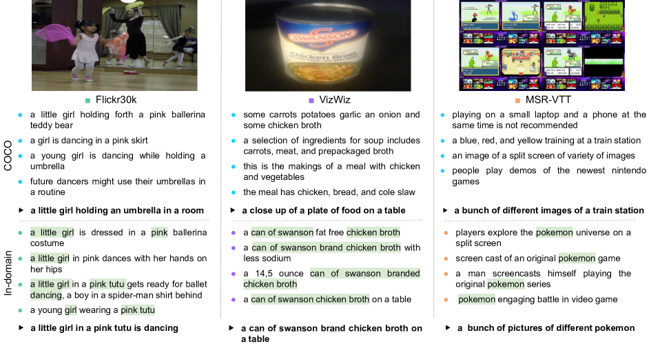
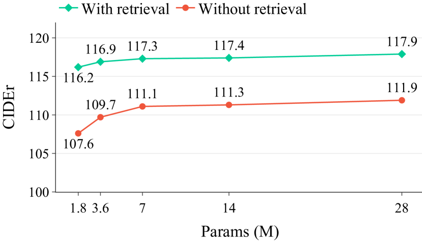
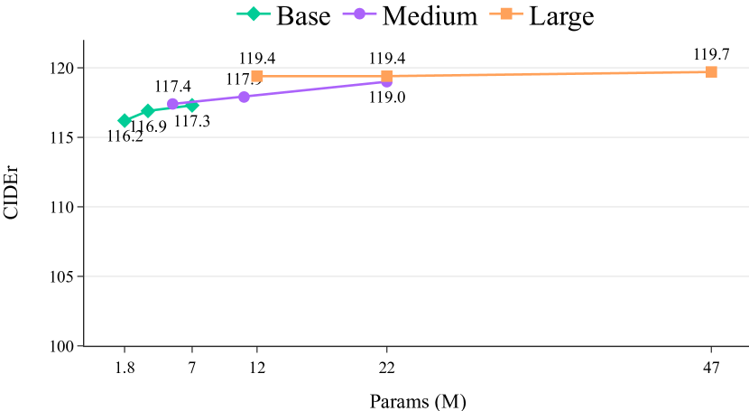
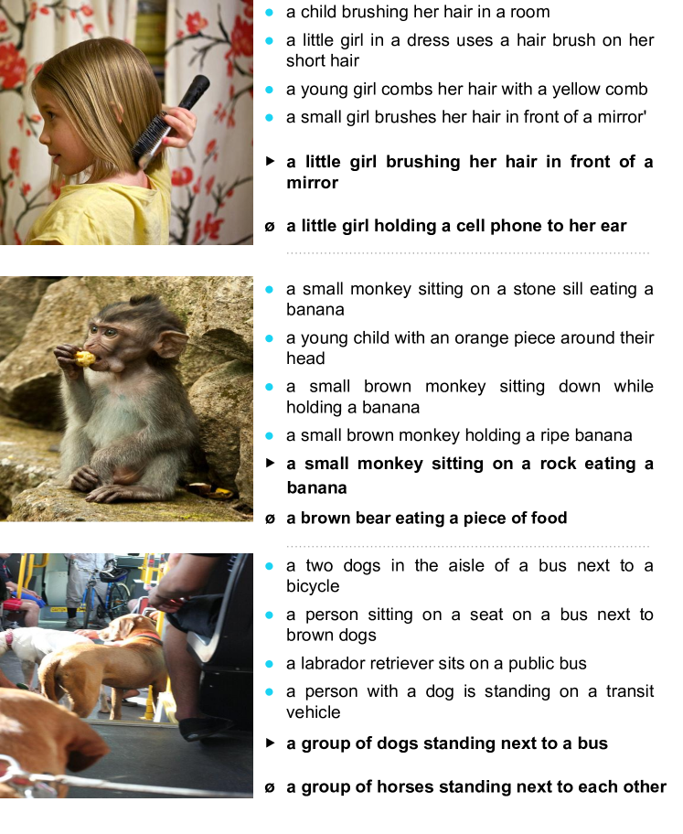
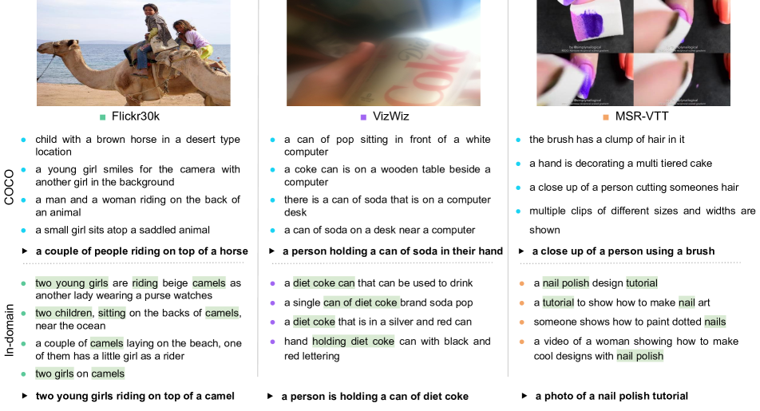

SmallCap: Lightweight Image Captioning Prompted
with Retrieval Augmentation
Abstract
Recent advances in image captioning have focused on scaling the data and model size, substantially increasing the cost of pre-training and finetuning. As an alternative to large models, we present SmallCap, which generates a caption conditioned on an input image and related captions retrieved from a datastore. Our model is lightweight and fast to train, as the only learned parameters are in newly introduced cross-attention layers between a pre-trained CLIP encoder and GPT-2 decoder. SmallCap can transfer to new domains without additional finetuning and can exploit large-scale data in a training-free fashion since the contents of the datastore can be readily replaced. Our experiments show that SmallCap, trained only on COCO, has competitive performance on this benchmark, and also transfers to other domains without retraining, solely through retrieval from target-domain data. Further improvement is achieved through the training-free exploitation of diverse human-labeled and web data, which proves to be effective for a range of domains, including the nocaps benchmark, designed to test generalization to unseen visual concepts.111Code: https://github.com/RitaRamo/smallcap.
1 Introduction

The state-of-the-art in image captioning is defined by increasingly large-scale models trained on increasingly large-scale datasets [41, 11, 38, 18]. Scaling up leads to higher computational demands for model pre-training and finetuning on downstream tasks. This becomes especially relevant when numerous model versions may be needed for different visual domains [1] and end-users in practical applications, e.g. image captioning for the visually impaired [10].
Some efforts have been made recently to reduce the cost of model training, e.g., ClipCap [25] and I-Tuning [22]. These models use an off-the-shelf pre-trained vision encoder and language decoder. The parameters of these pre-trained components are frozen and only a mapping between the two is trained for the task of image captioning. This results in a highly reduced number of trainable parameters (43M in each case) and faster training time. While these models operate on a much more manageable scale from a research perspective, they can still be unsuitable for the aforementioned practical applications, as both models require separate training for every use-case.
This work presents SmallCap, an image captioning model, prompted with captions retrieved from an external datastore of text, based on the input image. This formulation of image captioning enables a range of desirable properties: lightweight training, training-free domain transfer, and exploitation of large data in a training-free fashion.
SmallCap is both light to train and highly effective (see Figure 1).222The nocaps results shown in the figure include only models that follow the challenge guidelines, by training on the COCO dataset only. It uses a pre-trained CLIP vision encoder [29] and GPT-2 language model [30], which are frozen and linked through new cross-attention layers, amounting to 7 million trainable parameters. Through retrieval, the model leverages external data and therefore has to store less information within its weights (as demonstrated in Figure 6). Trained on the common COCO benchmark [7], SmallCap performs on par with other lightweight-training models, despite an 83% reduction in number of trainable parameters.
SmallCap can also leverage data in a training-free manner. Once the model is trained, we can replace the datastore with either (i) captions from a new domain or (ii) a large and diverse collection of captions. In the first case, which presents an alternative to finetuning, SmallCap gains access to the style and concepts that characterize the new domain and can generate captions accordingly. In the second case, which presents an alternative to generalized pre-training, SmallCap gains access to general knowledge that it can apply to any domain. Our experiments show that SmallCap effectively leverages new knowledge accessed through a retrieval-based prompt, improving its performance on different datasets. This includes the challenging VizWiz dataset, where images are captioned for the visually impaired [10], and the nocaps challenge dataset with rarely-seen and unseen visual concepts [1].
SmallCap competes with other lightweight-training models on in-domain evaluations and outperforms them by a large margin out-of-domain. It overcomes a key limitation of previous models, which require explicit finetuning to adapt to new domains, and in this way attests to the potential of retrieval augmentation for multimodal tasks.
2 Related Work
2.1 Image Captioning Models
Current approaches to image captioning employ encoder-decoder methods, where an input image is passed to a visual encoder and a caption is generated by an auto-regressive language decoder [45, 4, 46]. The state-of-the-art is currently held by general purpose vision-and-language (V&L) models [19, 41, 11, 18]. These large-scale models are pre-trained on large amounts of image-text pairs to learn generic multimodal features, after which they can be finetuned to a downstream task such as image captioning, with a separately-optimized model needed for each image captioning dataset. As such, these models require extensive resources for training and deployment.

2.2 Freezing Image Captioning Models
Components of the image captioning model can be initialized with pre-trained weights, frozen in part or completely [2], as a way to prevent catastrophic forgetting [24], i.e. to maintain good generalization. As frozen model parameters require no gradient updates, training becomes faster and occupies less GPU memory. ClipCap and I-Tuning [25, 22] are two lightweight-training image captioning models which use a pre-trained vision encoder, CLIP [29], and language decoder, GPT-2 [30], as frozen model components. To map between these two independently trained components, ClipCap employs prefix-tuning, mapping a fixed-length CLIP embedding of the image into the GPT-2 language space. I-Tuning extracts visual memory embeddings from CLIP and uses those to adjust the output hidden states of GPT-2. In SmallCap, we also use CLIP and GPT-2, instead connected through a set of trainable cross-attention layers. The novelty here is that SmallCap uses retrieval augmentation to maintain performance while substantially reducing the number of trainable parameters.
2.3 Retrieval-Augmented Generation
Retrieval-augmented language generation consists of conditioning generation on additional information that is retrieved from an external datastore [16]. Retrieval augmentation has been gaining traction in other tasks [17, 12], but remains largely unexplored in image captioning. Some relevant works in image captioning include [49, 43, 32, 33, 31]. Closest to our work, Sarto et al. [33] and Ramos et al. [31] recently proposed retrieval-augmented transformer-based captioning models that perform cross-attention over the encoded retrieved captions. Our work differs from previous work in two main ways. We employ a simple prompt-based conditioning method, wherein retrieved captions are used as a prompt to a generative language model. Moreover, we are the first to leverage retrieval augmentation for training-free domain transfer and generalization in image captioning.
2.4 Prompting Text Generation
Prompts have become a common way to pass additional instructions and task demonstrations to a pre-trained language model [30]. In vision-and-language learning, prompts have been used to instruct a model to perform one of multiple tasks it was trained for [18], or to apply a model to a new task in a zero-shot fashion [35, 13]. We use prompts with a task demonstration tailored to the specific input image, as a means towards retrieval augmentation.
3 Proposed Approach
3.1 Model
SmallCap is a lightweight-training image captioning model augmented with retrieved captions through the use of a prompt. SmallCap combines powerful pre-trained unimodal models in an encoder-decoder architecture, as shown in Figure 2 (a). As encoder we use CLIP [29], which produces a sequence of patch embeddings. As decoder we use GPT-2 [30]. These two models operate in different vector spaces, so we connect them with multi-head cross-attention, through which each layer of the decoder attends to the encoder outputs [36]. In order to reduce the compute requirements for training and to preserve their generalization capabilities, we freeze the encoder and decoder and only train the randomly-initialized cross-attention layers between them. We further control the number of trainable parameters through the dimensionality of the projection matrices in the cross-attention layers, which we denote as . For GPT-2, a model with hidden dimensions and cross-attention heads, defaults to 64 (), as per Vaswani et al. [36], but can be arbitrarily set to any value (see Appendix A for more details).
3.2 Prompting with Retrieved Captions
Instead of the image-to-image retrieval methods used in recent work [33], which are limited to image captioning data in the datastore, we employ image-to-text retrieval, as shown in Figure 2 (b). In this way, SmallCap can make use of a datastore containing any type of text that is considered useful for describing images, be that image captions, video captions, audio captions, etc. Here, we exploit the full CLIP model, with its vision and text encoders, which map the two modalities into a shared vector space. We encode an input image and the contents of the datastore, and use nearest neighbor search based on cosine similarity to retrieve the text items from the datastore most similar to the image. The retrieved text is used to fill the slots in a fixed prompt template of the following form: Similar images show {caption1}...{captionk}. This image shows ___.333See Appendix C for more information on the prompt template. The last sentence of the prompt is similar to the simple, fixed prompts used in other studies [18], but here this cue is preceded by a demonstration of the captioning task, tailored to the input image. The decoder receives this prompt as input tokens and then generates a caption conditioned on the image features V and the task demonstration X. The weights in the cross-attention layers () are trained by minimizing the cross-entropy loss of predicting the tokens in the reference :
| (1) |
| Model | B@4 | M | CIDEr | S | |
|---|---|---|---|---|---|
| Large Models with V&L pre-training | |||||
| LEMON [11] | 675 | 41.5 | 30.8 | 139.1 | 24.1 |
| SimVLM [41] | 632 | 40.6 | 33.7 | 143.3 | 25.4 |
| OSCAR [19] | 338 | 37.4 | 30.7 | 127.8 | 23.5 |
| BLIP [18] | 224 | 39.7 | - | 133.3 | - |
| Lightweight-training models | |||||
| I-Tuning [22] | 95 | 34.8 | 29.3 | 119.4 | 22.4 |
| CaMEL [5] | 76 | 39.1 | 29.4 | 125.7 | 22.2 |
| I-Tuning [22] | 44 | 35.5 | 28.8 | 120.0 | 22.0 |
| ClipCap [25] | 43 | 33.5 | 27.5 | 113.1 | 21.1 |
| I-Tuning [22] | 14 | 34.8 | 28.3 | 116.7 | 21.8 |
| SmallCap | 7 | 37.0 | 27.9 | 119.7 | 21.3 |
| SmallCap | 47 | 37.2 | 28.3 | 121.8 | 21.5 |
| SmallCap | 22 | 36.5 | 28.1 | 120.7 | 21.6 |
| SmallCap | 3.6 | 36.7 | 27.8 | 119.1 | 21.1 |
| SmallCap | 1.8 | 36.0 | 27.4 | 117.4 | 21.0 |
The datastore used to train SmallCap can change from training to inference, depending on the application. For example, additional data can be added to enable better generalization, or the datastore can be entirely swapped for new data at inference time to enable domain transfer without the need for retraining, as shown in Section 5.
4 Main Experiments
4.1 Experimental Setup
SmallCap’s encoder and decoder are initialized respectively from CLIP-ViT-B/32 and GPT-2, as available on HuggingFace [42]. The encoder and decoder are not updated and only the cross-attention layers between them are trained. A 12-head cross-attention layer is added to each of the 12 layers of GPT-2. To achieve a low number of trainable parameters, we vary the dimensionality of the projection matrices in the cross-attention layers, , by scaling from the default size of 64 down to 16, 8 and 4, which results in model variants with 7M, 3.6M and 1.8M trainable parameters, respectively. Our main model, SmallCap, has 7M trainable parameters and a total of 218M parameters (including the frozen CLIP encoder and GPT-2 decoder).
The cross-attention layers are trained on the COCO dataset [7] using the standard Karpathy splits [15]. The models are trained to minimize the cross-entropy loss using an AdamW optimizer [21] with an initial learning rate of 1e-4 and a batch size of 64. Training runs for 10 epochs and we use the epoch checkpoint with the best CIDEr score on the validation set. Training takes up to 8 hours on a single NVIDIA A100 GPU, using 16 GB of the available memory.
During training, the model is prompted with a set of captions per image, retrieved from a datastore of the training captions from COCO. Retrieval is based on CLIP-ResNet-50x64444Downloaded from https://github.com/openai/CLIP representations of input images and captions in the datastore, the latter being precomputed offline and indexed with FAISS [14] for efficient nearest neighbor searching.555We use an inner product index (IndexFlatIP) without any training and normalize the representations to search based on cosine similarity. During inference, the model generates a caption using beam search decoding with a beam size of 3. Inference, including retrieval and prompting, takes 0.22 seconds on average across 1,000 randomly sampled images, compared to 0.19 seconds without retrieval. For more details on design choices and hyperparameters, see Appendix B.
For evaluation, we compute the standard metrics: BLEU-4 (B@4) [27], METEOR (M) [8], CIDEr [37], and SPICE (S) [3], using the COCO evaluation package.666https://github.com/tylin/coco-caption
4.2 Benchmark Results
Here, we report results on COCO [7], as well as on nocaps[1], a challenge dataset for evaluating the generalization capabilities of models trained on COCO.
| Model | In | Near | Out | Entire |
|---|---|---|---|---|
| OSCAR⋄ | 84.8 | 82.1 | 73.8 | 80.9 |
| CaMEL⋆ | 88.1 | 79.1 | 54.6 | 75.9 |
| ClipCap⋆ | 74.5 | 65.6 | 47.1 | 63.4 |
| SmallCap | 83.3 | 77.1 | 65.0 | 75.8 |
| SmallCap | 87.9 | 84.6 | 84.4 | 85.0 |
COCO:
In Table 1 we benchmark our approach on the COCO dataset. In the top half of the table, we acknowledge the strong performance of large-scale pre-trained models, ranging in size from 224M to 675M trainable parameters. We also note that these models are pre-trained on 4M–1.8B image-caption pairs, i.e., much more than the COCO data.
In the lower half of the table we see how our approach compares to other lightweight-training models. With only 7M parameters, SmallCap performs better or on par with ClipCap and I-Tuning. In this in-domain setting, it is only outperformed by CaMEL, which is trained end-to-end with eleven times as many trainable parameters. Reducing the number of trainable parameters to 3.6M, SmallCap still yields competitive performance, and even with just 1.8M trainable parameters, SmallCap is better than the substantially larger models ClipCap and I-Tuning. We also experiment with Medium and Large GPT-2 decoders (SmallCap and SmallCap in Table 1), and find that performance scales: by one CIDEr point from Base to Medium and by another point from Medium to Large.777See Appendix E for more results regarding scaling the decoder. Despite its small size, SmallCap shows competitive performance on COCO, the dataset it was trained on. In contrast to previous lightweight-training models, SmallCap further has the ability to generalize and transfer out-of-domain without retraining, as shown in subsequent experiments.
nocaps:
Results on the nocaps test set are reported in Table 2.888OSCAR results with COCO-only training. CaMEL results with CLIP-ResNet-50×16, = 0.1, no mesh connectivity, and a cross-entropy objective (checkpoint obtained through personal communication).,999We only include results from models which follow the nocaps guidelines to not train on image-caption pairs beyond COCO [1]. As we use only captions for retrieval, our method is also in line with these guidelines. ,101010We also include results on the validation set in Appendix D.. SmallCap clearly outperforms other lightweight methods Out-of-domain and achieves competitive performance In-domain and Near-domain. The model’s strong generalization capabilities point to it being less prone to over-fitting as it does not need to memorize its training data, available also through retrieval. Our model can further improve when additional data is placed in the datastore, as seen in SmallCap. In this variant, described in more detail in Section 5.2, the COCO datastore is augmented with diverse web (W) and human-labeled (H) data. SmallCap shows impressive generalization capabilities, outperforming the much larger OSCAR by over 10 points in the Out-of-domain setting. Next, we further explore SmallCap’s ability for training-free transfer to new domains on diverse datasets.
5 Training-Free Use of Data
In this section, we study SmallCap’s ability to leverage new data in its datastore in a training-free manner, i.e. all experiments presented here constitute changes made to the datastore at inference time, while the model, trained on COCO, remains fixed. The focus is on out-of-domain performance as measured on a diverse set of captioning datasets: Flick30k [47], VizWiz [10] and MSR-VTT [44]. The latter is in fact a video captioning dataset, which we adapt by converting video clips into an image of four 4 frames, sampled at 0, 25, 50 and 100% of the clip duration (see the MSR-VTT example in Figure 5). We start by exploring different configurations of the datastore, with the results in Table 3 reported on validation data.
5.1 In-domain Data
In the top of Table 3, we show how SmallCap performs when its datastore is populated with the training data associated with each respective dataset (In-domain). In comparison to using COCO captions in the datastore (COCO), the model performance substantially increases for all three datasets. This shows that SmallCap adapts to the retrieved information to achieve domain transfer. The improvement is most notable for VizWiz, likely because the nature of this dataset is very distinct from COCO, and thus there is a larger domain gap to be closed.
| SmallCap datastore | F30K | VW | MV |
|---|---|---|---|
| COCO | 52.2 | 34.5 | 23.3 |
| In-domain | 55.4 | 47.7 | 29.2 |
| Datastore augmentation | |||
| In-domain + Web | 58.6 | 48.0 | 29.8 |
| In-domain + Human-labeled | 57.6 | 47.5 | 30.9 |
| In-domain + W + H | 57.9 | 48.0 | 30.7 |
| Domain-agnostic | |||
| Web | 58.4 | 42.4 | 27.6 |
| Human-labeled | 56.6 | 36.4 | 29.0 |
| Web + Human-labeled | 57.8 | 42.2 | 29.9 |
5.2 Augmenting the Datastore
In Table 3 (Datastore augmentation), we augment the in-domain datastore with additional large-scale data in an effort to improve generalization. We experiment with diverse web data (which is large-scale but automatically labeled) and human-labeled data (smaller-scale but clean).111111Data size and further details can be found in Appendix F.
+ Web Data:
We first consider large-scale data from the web, expanding the datastore with text from three web datasets [18] (Conceptual Captions [34], Conceptual 12M [6], and SBU captions [26]).121212We use a trained FAISS index (IndexIVFFlat) for faster search. The results with In-domain + Web in Table 3 show that performance improves for all three datasets. We can see a bigger improvement on Flickr30K and MSR-VTT when using a large and diverse datastore compared to just using in-domain data. Improvement on VizWiz, on the other hand, remains low, in line with the earlier observation that this dataset has a distinct distribution that is not easily matched by other data.
+ Human-labeled Data:
We also consider smaller-scale but clean human-labeled data. As discussed in Section 3.2, the datastore can contain any type of text that can be useful to describe images, thus not being constrained by the assumption of image-caption pairs. As such, we consider text not only from image captions (COCO [7], Flickr30k [47], VizWiz [10]), but also from video captions (MSR-VTT [44], VATEX [40], TGIF [20]), audio captions (Clotho [9]), and localized narratives (LN ADE20k, LN COCO, LN Flickr30k, LN OpenImages [28]).
As seen in In-domain + Human-labeled, adding human-labeled data to the datastore leads to an improvement over using in-domain data only for Flickr30k and MSR-VTT but not for VizWiz. In comparison to In-domain + Web, this improvement is smaller for Flickr30k, but larger for MSR-VTT. Although smaller than web data, human-labeled data benefits MSR-VTT more, because it contains text from different tasks, including video captioning.
+ Web + Human-labeled Data:
Seeing that SmallCap can benefit both from Web and from Human-labeled data as augmentations over in-domain data alone, we also consider a combination of the two, to determine whether their contributions are complementary or overlapping. The results for In-domain + W + H in Table 3 show that combining the two sources of data is not beneficial for any of the three datasets.
5.3 Domain-agnostic Datastore
In this section, we study whether SmallCap could still perform well without access to in-domain data and report results under the heading Domain-agnostic in Table 3. We find that the patterns observed above with in-domain data largely hold without it as well. With the large and diverse Web datastore, SmallCap performs close to or even better than with In-domain data. Human-labeled data is again seen to benefit MSR-VTT the most, the optimal configuration for this dataset being Web + Human-labeled.
From the exploration presented above, we conclude that SmallCap’s image captioning capabilities can transfer with access to web data in addition to or in place of in-domain data. The model can also leverage human-labeled data beyond image-captioning pairs in solving tasks other than image captioning, such as video captioning.
| Flickr30K | VizWiz | MSR-VTT | |
| ClipCap | 41.2 | 28.3 | 12.5 |
| CaMEL | 55.2 | 37.6 | 20.7 |
| SmallCap | 60.6 | 55.0 | 28.4 |
| Pre-training & finetuning | |||
| SOTA | 79.6 [23] | 120.8 [38] | 75.9 [38] |

5.4 Results with the Best Configuration
Having explored different datastore configurations for each of the three datasets, we use the best configuration for each to compare zero-shot performance against ClipCap and CaMEL, both models also trained only on COCO. In Table 4 we show test set performance (in CIDEr score) with a datastore consisting of In-domain + Web for Flickr30k and VizWiz, and In-domain + Human-labeled for MSR-VTT. SmallCap outperforms both ClipCap and CaMEL by a large margin on all three datasets. In comparison to CaMEL, the stronger baseline of the two, we see a 5.4 point improvement on Flickr30k, a noteworthy 17.4 point improvement on VizWiz and an increase of 7.7 points on MSR-VTT. The large improvement on VizWiz demonstrates SmallCap’s ability to transfer to domains very distinct from the training data, i.e., COCO. The improvement on MSR-VTT, on the other hand, shows our approach has potential not only for other domains but for other tasks as well. These results show that while other lightweight-training models lack out-of-domain generalization without finetuning, our model can transfer across domains by only swapping the datastore contents. In the bottom of the table, we provide state-of-the-art results for context, which were achieved by large-scale pre-trained V&L models, finetuned specifically on the respective datasets.
6 Discussion
6.1 Qualitative Examples
Figure 3 shows examples of the retrieved and generated captions for two images from COCO. In the first example, we observe that the retrieved captions are highly relevant to the input image and the generated captions are semantically similar to them. As seen in the second example, SmallCap can also be robust to misleading information from retrieval. Figure 5 shows examples of captions generated for Flickr30k, VizWiz, and MSR-VTT, with a datastore populated with COCO or with in-domain data. These qualitative results show how SmallCap adapts to new domains: with the help of the retrieved captions, it correctly refers to the concepts tutu, the Swanson brand name, and Pokemon. The first two concepts are not present in the COCO training data at all, while the last is seen just six times.
6.2 Analysis of the Retrieved Captions
In Section 5.3, we demonstrated the ability of SmallCap to exploit large data in a training-free fashion. Here, we inspect the distribution of retrieved captions in the In-domain + Web + Human-labeled setting, in order to understand the individual impact of each dataset. As can be seen in Figure 4, most text is retrieved from web data, especially in the presence of unseen visual concepts, as is the case for nocaps. Besides web data, the model tends to retrieve text from the corresponding dataset or from a similar domain; for instance, MSR-VTT retrieval also relies on other video datasets. Due to its unique distribution, VizWiz stands out as the case with the highest rate of in-domain retrieval.
Seeing that text from all types of human-labeled data is retrieved, we measure the actual impact of each type on performance. In Table 5, we report performance on Flickr30k, VizWiz, and MSR-VTT, with an in-domain datastore augmented with either Image captions, Video captions, localized Narratives, or Audio captions. We see that SmallCap can indeed benefit from data beyond image captions. For instance, video captions help not only for MSR-VTT, but also for Flickr30k and VizWiz. Flickr30k benefits the most from localized narratives since this dataset contains narratives for the Flickr30k images. Audio captions are beneficial for both Flickr30k and MSR-VTT. Considering the distinct nature of the audio and visual modalities, this finding demonstrates the potential of leveraging data which has previously seen limited application to image captioning.
|
 |
| Flickr30K | VizWiz | MSR-VTT | |
|---|---|---|---|
| In-domain | 52.2 | 47.7 | 29.2 |
| + Image | 56.7 | 47.8 | 29.8 |
| + Video | 57.0 | 47.8 | 31.1 |
| + Narratives | 57.1 | 47.2 | 28.7 |
| + Audio | 55.4 | 47.7 | 29.4 |


6.3 The Impact of Retrieval
In Figure 6, we show validation performance with 1.8, 3.6, 7, 14 and 28 million trainable parameters with and without retrieval augmentation.131313The model sizes correspond to and . For variants with retrieval augmentation, performance is stable across the range of model sizes considered. Reducing the number of trainable parameters by a factor of four, from 28M to 7M, leads to a slight drop of 0.6 CIDEr points. This indicates that SmallCap has a close-to-optimal size to performance trade-off.
Next, we ablate the retrieval augmentation to quantify its impact. We train models without retrieval augmentation, prompting them with just the phrase This image shows. As seen in Figure 6, without the aid of retrieved captions, there is a notable drop in performance compared to results with retrieval. Moreover, model performance degrades at a higher rate: while performance at the two extremes of model sizes differs by just 1.7 CIDEr points with retrieval, without it the difference is 4.3 points.141414See Appendix H for qualitative examples with and without retrieval.
| Decoder | B@4 | M | CIDEr | S | |
|---|---|---|---|---|---|
| GPT2-Base | 7 | 37.0 | 27.9 | 119.7 | 21.3 |
| OPT-125M | 7 | 37.6 | 28.4 | 122.0 | 21.7 |
| GPT2-Medium | 22 | 36.5 | 28.1 | 120.7 | 21.6 |
| OPT-350M | 22 | 37.5 | 28.7 | 122.7 | 22.0 |
In order to confirm that SmallCap is not simply paraphrasing the retrieved captions without attending to the visual input, we experiment with ablating the visual modality. For this, we train a model on “blank” input images, setting the visual features from the encoder to zero. This yields a much lower CIDEr score of 90.1 on the validation set, showing that SmallCap indeed uses the visual input.
6.4 Alternative Decoders
At the request of the anonymous reviewers, we include additional experiments with a more recent language model. Here, we use OPT-125M and 350M [48], equivalent in size to GPT2-Base and Medium.151515There is no OPT variant equivalent in size to GPT2-Large. The results in Table 6 show that SmallCap also performs well with these language models and is therefore model agnostic.161616See Appendix E for OPT results without retrieval.,171717Due to our academic computing budget, we only repeat the experiments from Table 1. Future work can experiment further in this direction.
7 Conclusion
In this paper, we propose SmallCap, an image captioning model augmented with retrieval, which is light to train and can be transferred across domains without retraining. Results on the COCO dataset show that SmallCap is competitive to other lightweight-training models despite having substantially less trainable parameters, instead leveraging non-parametric information from a datastore of text. Out-of-domain evaluations show that SmallCap can also perform training-free domain transfer when given access to a datastore with target-domain data. Our model further benefits from diverse web and human-labeled data in addition to or in place of target-domain data. We find that SmallCap benefits not just from access to image captions, but also to video and audio captions (resources neglected in image captioning work in the past).
SmallCap’s small size and impressive performance in out-of-domain settings attest to the potential of retrieval augmentation as an alternative to the expensive training found in large pre-trained vision-and-language models and the costly finetuning that even previous lightweight-training models require in order to adapt to different image captioning datasets. Future work can apply our retrieval augmentation approach to a wider range of multimodal tasks, and further explore the scalability of the data used for retrieval.
Acknowledgements
This research was supported by the Portuguese Recovery and Resilience Plan through project C645008882-00000055, through Fundação para a Ciência e Tecnologia (FCT) with the Ph.D. scholarship 2020.06106.BD, and through the INESC-ID multi-annual funding from the PIDDAC programme (UIDB/50021/2020).
References
- [1] Harsh Agrawal, Karan Desai, Yufei Wang, Xinlei Chen, Rishabh Jain, Mark Johnson, Dhruv Batra, Devi Parikh, Stefan Lee, and Peter Anderson. nocaps: novel object captioning at scale. In Proceedings of the IEEE/CVF International Conference on Computer Vision, 2019.
- [2] Jean-Baptiste Alayrac, Jeff Donahue, Pauline Luc, Antoine Miech, Iain Barr, Yana Hasson, Karel Lenc, Arthur Mensch, Katie Millican, Malcolm Reynolds, et al. Flamingo: a visual language model for few-shot learning. arXiv preprint arXiv:2204.14198, 2022.
- [3] Peter Anderson, Basura Fernando, Mark Johnson, and Stephen Gould. Spice: Semantic propositional image caption evaluation. In Proceedings of the European Conference on Computer Vision, 2016.
- [4] Peter Anderson, Xiaodong He, Chris Buehler, Damien Teney, Mark Johnson, Stephen Gould, and Lei Zhang. Bottom-up and top-down attention for image captioning and visual question answering. In Proceedings of the IEEE/CVF Conference on Computer Vision and Pattern Recognition, 2018.
- [5] Manuele Barraco, Matteo Stefanini, Marcella Cornia, Silvia Cascianelli, Lorenzo Baraldi, and Rita Cucchiara. CaMEL: Mean Teacher Learning for Image Captioning. In International Conference on Pattern Recognition, 2022.
- [6] Soravit Changpinyo, Piyush Sharma, Nan Ding, and Radu Soricut. Conceptual 12m: Pushing web-scale image-text pre-training to recognize long-tail visual concepts. In Proceedings of the IEEE/CVF Conference on Computer Vision and Pattern Recognition, 2021.
- [7] Xinlei Chen, Hao Fang, Tsung-Yi Lin, Ramakrishna Vedantam, Saurabh Gupta, Piotr Dollár, and C. Lawrence Zitnick. Microsoft COCO captions: Data collection and evaluation server. arXiv preprint arXiv:1504.00325, 2015.
- [8] Michael Denkowski and Alon Lavie. Meteor universal: Language specific translation evaluation for any target language. In Proceedings of the ACL Workshop on Statistical Machine Translation, 2014.
- [9] Konstantinos Drossos, Samuel Lipping, and Tuomas Virtanen. Clotho: An audio captioning dataset. In Proceedings of the IEEE International Conference on Acoustics, Speech and Signal Processing, 2020.
- [10] Danna Gurari, Yinan Zhao, Meng Zhang, and Nilavra Bhattacharya. Captioning images taken by people who are blind. In Proceedings of European Conference on Computer Vision. Springer, 2020.
- [11] Xiaowei Hu, Zhe Gan, Jianfeng Wang, Zhengyuan Yang, Zicheng Liu, Yumao Lu, and Lijuan Wang. Scaling up vision-language pre-training for image captioning. In Proceedings of the IEEE/CVF Conference on Computer Vision and Pattern Recognition, 2022.
- [12] Gautier Izacard, Patrick Lewis, Maria Lomeli, Lucas Hosseini, Fabio Petroni, Timo Schick, Jane Dwivedi-Yu, Armand Joulin, Sebastian Riedel, and Edouard Grave. Few-shot learning with retrieval augmented language models. arXiv preprint arXiv:2208.03299, 2022.
- [13] Woojeong Jin, Yu Cheng, Yelong Shen, Weizhu Chen, and Xiang Ren. A good prompt is worth millions of parameters? low-resource prompt-based learning for vision-language models. arXiv preprint arXiv:2110.08484, 2021.
- [14] Jeff Johnson, Matthijs Douze, and Hervé Jégou. Billion-scale similarity search with GPUs. arXiv preprint arXiv:1702.08734, 2017.
- [15] Andrej Karpathy and Li Fei-Fei. Deep visual-semantic alignments for generating image descriptions. In Proceedings of the IEEE/CVF Conference on Computer Vision and Pattern Recognition, 2015.
- [16] Patrick Lewis, Ethan Perez, Aleksandra Piktus, Fabio Petroni, Vladimir Karpukhin, Naman Goyal, Heinrich Küttler, Mike Lewis, Wen-tau Yih, Tim Rocktäschel, Sebastian Riedel, and Douwe Kiela. Retrieval-augmented generation for knowledge-intensive nlp tasks. In Proceedings of the Annual Conference on Neural Information Processing Systems, 2020.
- [17] Huayang Li, Yixuan Su, Deng Cai, Yan Wang, and Lemao Liu. A survey on retrieval-augmented text generation. arXiv preprint arXiv:2202.01110, 2022.
- [18] Junnan Li, Dongxu Li, Caiming Xiong, and Steven Hoi. Blip: Bootstrapping language-image pre-training for unified vision-language understanding and generation. arXiv preprint arXiv:2201.12086, 2022.
- [19] Xiujun Li, Xi Yin, Chunyuan Li, Pengchuan Zhang, Xiaowei Hu, Lei Zhang, Lijuan Wang, Houdong Hu, Li Dong, Furu Wei, et al. OSCAR: Object-semantics aligned pre-training for vision-language tasks. In Proceedings of European Conference on Computer Vision, 2020.
- [20] Yuncheng Li, Yale Song, Liangliang Cao, Joel Tetreault, Larry Goldberg, Alejandro Jaimes, and Jiebo Luo. Tgif: A new dataset and benchmark on animated gif description. In Proceedings of the IEEE/CVF Conference on Computer Vision and Pattern Recognition, 2016.
- [21] Ilya Loshchilov and Frank Hutter. Fixing weight decay regularization in adam. arXiv preprint arXiv:1711.05101, 2018.
- [22] Ziyang Luo, Yadong Xi, Rongsheng Zhang, and Jing Ma. I-tuning: Tuning language models with image for caption generation. arXiv preprint arXiv:2202.06574, 2022.
- [23] Ziyang Luo, Yadong Xi, Rongsheng Zhang, and Jing Ma. VC-GPT: Visual conditioned GPT for end-to-end generative vision-and-language pre-training. arXiv preprint arXiv:2201.12723, 2022.
- [24] Michael McCloskey and Neal J Cohen. Catastrophic interference in connectionist networks: The sequential learning problem. In Psychology of learning and motivation. 1989.
- [25] Ron Mokady, Amir Hertz, and Amit H. Bermano. Clipcap: CLIP prefix for image captioning. arXiv preprint arXiv:2111.09734, 2021.
- [26] Vicente Ordonez, Girish Kulkarni, and Tamara Berg. Im2text: Describing images using 1 million captioned photographs. In Proceedings of the Anual Conference on Neural Information Processing Systems, 2011.
- [27] Kishore Papineni, Salim Roukos, Todd Ward, and Wei-Jing Zhu. BLEU: a method for automatic evaluation of machine translation. In Proceedings of the Annual Meeting of the Association for Computational Linguistics, 2002.
- [28] Jordi Pont-Tuset, Jasper Uijlings, Soravit Changpinyo, Radu Soricut, and Vittorio Ferrari. Connecting vision and language with localized narratives. In Proceedings of the European Conference on Computer Vision, 2020.
- [29] Alec Radford, Jong Wook Kim, Chris Hallacy, Aditya Ramesh, Gabriel Goh, Sandhini Agarwal, Girish Sastry, Amanda Askell, Pamela Mishkin, Jack Clark, et al. Learning transferable visual models from natural language supervision. In Proceedings of the International Conference on Machine Learning, 2021.
- [30] Alec Radford, Jeffrey Wu, Rewon Child, David Luan, Dario Amodei, Ilya Sutskever, et al. Language models are unsupervised multitask learners. In OpenAI blog, 2019.
- [31] Rita Ramos, Desmond Elliott, and Bruno Martins. Retrieval-augmented image captioning. In Proceedings of the Conference of the European Chapter of the Association for Computational Linguistics, 2023.
- [32] Rita Parada Ramos, Patrícia Pereira, Helena Moniz, Joao Paulo Carvalho, and Bruno Martins. Retrieval augmentation for deep neural networks. In Proceedings of the International Joint Conference on Neural Networks, 2021.
- [33] Sara Sarto, Marcella Cornia, Lorenzo Baraldi, and Rita Cucchiara. Retrieval-augmented transformer for image captioning. arXiv preprint arXiv:2207.13162, 2022.
- [34] Piyush Sharma, Nan Ding, Sebastian Goodman, and Radu Soricut. Conceptual captions: A cleaned, hypernymed, image alt-text dataset for automatic image captioning. In Proceedings of the Annual Meeting of the Association for Computational Linguistics, 2018.
- [35] Maria Tsimpoukelli, Jacob L Menick, Serkan Cabi, S. M. Ali Eslami, Oriol Vinyals, and Felix Hill. Multimodal few-shot learning with frozen language models. In M. Ranzato, A. Beygelzimer, Y. Dauphin, P.S. Liang, and J. Wortman Vaughan, editors, In Advances in Neural Information Processing Systems. Curran Associates, Inc., 2021.
- [36] Ashish Vaswani, Noam Shazeer, Niki Parmar, Jakob Uszkoreit, Llion Jones, Aidan N Gomez, Ł ukasz Kaiser, and Illia Polosukhin. In Proceedings of the Anual Conference on Neural Information Processing Systems, 2017.
- [37] Ramakrishna Vedantam, C Lawrence Zitnick, and Devi Parikh. Cider: Consensus-based image description evaluation. In Proceedings of the IEEE/CVF Conference on Computer Vision and Pattern Recognition, 2015.
- [38] Jianfeng Wang, Zhengyuan Yang, Xiaowei Hu, Linjie Li, Kevin Lin, Zhe Gan, Zicheng Liu, Ce Liu, and Lijuan Wang. Git: A generative image-to-text transformer for vision and language. arXiv preprint arXiv:2205.14100, 2022.
- [39] Shuohang Wang, Yichong Xu, Yuwei Fang, Yang Liu, Siqi Sun, Ruochen Xu, Chenguang Zhu, and Michael Zeng. Training data is more valuable than you think: A simple and effective method by retrieving from training data. In Proceedings of the Annual Meeting of the Association for Computational Linguistics, 2022.
- [40] Xin Wang, Jiawei Wu, Junkun Chen, Lei Li, Yuan-Fang Wang, and William Yang Wang. Vatex: A large-scale, high-quality multilingual dataset for video-and-language research. In Proceedings of the IEEE/CVF International Conference on Computer Vision, 2019.
- [41] Zirui Wang, Jiahui Yu, Adams Wei Yu, Zihang Dai, Yulia Tsvetkov, and Yuan Cao. Simvlm: Simple visual language model pretraining with weak supervision. arXiv preprint arXiv:2108.10904, 2021.
- [42] Thomas Wolf, Julien Chaumond, Lysandre Debut, Victor Sanh, Clement Delangue, Anthony Moi, Pierric Cistac, Morgan Funtowicz, Joe Davison, Sam Shleifer, et al. Transformers: State-of-the-art natural language processing. In Proceedings of the Conference on Empirical Methods in Natural Language Processing: System Demonstrations, 2020.
- [43] Chunpu Xu, Wei Zhao, Min Yang, Xiang Ao, Wangrong Cheng, and Jinwen Tian. A unified generation-retrieval framework for image captioning. Proceedings of the ACM International Conference on Information and Knowledge Management, 2019.
- [44] Jun Xu, Tao Mei, Ting Yao, and Yong Rui. MSR-VTT: A large video description dataset for bridging video and language. In Proceedings of the IEEE/CVF Conference on Computer Vision and Pattern Recognition, 2016.
- [45] Kelvin Xu, Jimmy Ba, Ryan Kiros, Kyunghyun Cho, Aaron Courville, Ruslan Salakhudinov, Rich Zemel, and Yoshua Bengio. Show, attend and tell: Neural image caption generation with visual attention. In Proceedings of the International Conference on Machine Learning, 2015.
- [46] Xuewen Yang, Yingru Liu, and Xin Wang. Reformer: The relational transformer for image captioning. In Proceedings of the ACM International Conference on Multimedia, 2022.
- [47] Peter Young, Alice Lai, Micah Hodosh, and Julia Hockenmaier. From image descriptions to visual denotations: New similarity metrics for semantic inference over event descriptions. Transactions of the Association for Computational Linguistics, 2, 2014.
- [48] Susan Zhang, Stephen Roller, Naman Goyal, Mikel Artetxe, Moya Chen, Shuohui Chen, Christopher Dewan, Mona Diab, Xian Li, Xi Victoria Lin, et al. OPT: Open pre-trained transformer language models. arXiv preprint arXiv:2205.01068, 2022.
- [49] Shanshan Zhao, Lixiang Li, Haipeng Peng, Zihang Yang, and Jiaxuan Zhang. Image caption generation via unified retrieval and generation-based method. Applied Sciences, 10(18), 2020.
Appendix A Cross-Attention Layers
We add cross-attention layers to GPT-2 following Vaswani et al. [36]. A set of queries , values , and keys are processed by multi-head cross-attention (MHA) with heads as follows:
| (2) |
| (3) |
| (4) |
where , , , and are learned model parameters, and the attention dimensionality is set manually to a desired value.
We explore different values for the dimensionality of the cross-attention projection matrices () to achieve a lower number of trainable parameters, as discussed in Section 6.3.
Appendix B Design Choices and Hyperparameters
| Retrieval encoder | CIDEr |
|---|---|
| ViT-B/32 | 109.5 |
| ViT-L/14 | 115.2 |
| ResNet-50x4 | 114.1 |
| ResNet-50x64 | 117.9 |
| Image encoder | CIDEr |
|---|---|
| ViT-B/32 | 117.9 |
| ResNet-50x64 | 107.5 |
| k | CIDEr |
|---|---|
| 1 | 113.38 |
| 2 | 116.03 |
| 3 | 117.47 |
| 4 | 117.88 |
| 5 | 117.87 |
| 6 | 117.82 |
We developed the optimal configuration for SmallCap by first tuning the retrieval encoder, then the main vision encoder, followed by the number of retrieved captions, and lastly the cross-attention dimensionality. The results from the first three steps are presented below, while the last step is presented in Section 6.3. At the start of the tuning process, the main vision encoder was set to CLIP-ViT-B/32, the number of retrieved captions to 5 and the cross-attention dimensionality to 64.
B.1 Retrieval Encoder
We compared three CLIP versions for retrieval. As seen in Table 7 (a), CLIP-ResNet-50x64 performs best so we used this encoder for the final SmallCap model.
B.2 Main Vision Encoder
Next, we compared the use of CLIP-ResNet-50x64 to CLIP-ViT-B/32 as vision encoder in the main model. To use CLIP-ResNet-50x64 as an image encoder, we added a linear projection to match the dimensionality of the encoder to that of the decoder for the purposes of cross-attention. In Table 7 (b), we see that CLIP-ViT-B/32 has better performance.
B.3 Number of Retrieved Captions
We also tuned the number of retrieved captions, training the model with ranging from 1 to 6. Results are reported in Table 7 (c) and indicate that is the optimal value. Qualitative analysis also showed that it is important to retrieve a sufficient number of captions since retrieving more captions can make the model more robust against wrong information from certain retrieved captions, as depicted in the second example in Figure 3.
Appendix C Prompt
Besides the template proposed in Section 3.2, we explored other templates for prompting, including different separators between the retrieved captions (e.g., comma, dot, empty lines). However, we found that the prompt template has little impact on the model’s performance, in line with previous work [13]. Our final template was:
Similar images show\n\n<caption 1>\n\n<caption 2>\n\n<caption 3>\n\n<caption 4>.\n\nThis image shows
Appendix D nocaps
| Models | In | Near | Out | Entire |
|---|---|---|---|---|
| Validation | ||||
| OSCAR* | 78.8 | 78.9 | 77.4 | 78.6 |
| I-Tuning∘ | 89.6 | 80.4 | 64.8 | 78.5 |
| I-Tuning∘ | 89.6 | 77.4 | 58.8 | 75.4 |
| ClipCap* | 84.9 | 66.8 | 49.1 | 65.8 |
| SmallCap | 87.6 | 78.6 | 68.9 | 77.9 |
| SmallCap | 90.5 | 85.6 | 91.5 | 87.5 |
In Table 8, we show results on the nocaps validation set, since several recent studies only include performance on the validation set, following [19]. In line with the test set results, SmallCap outperforms other lightweight-training models and even the large model OSCAR, especially in the Out-of-domain setting.
Appendix E SmallCap with Alternative Decoders
E.1 Larger GPT-2 decoders
In Figure 7, we study the scaling behaviour of SmallCap with larger decoders for different cross-attention dimensionalities (, and ). We can see that it is beneficial to train with GPT-Medium and GPT-Large across the different dimensionalities of the cross-attention. Controlling the cross-attention dimensionality allows us to leverage these larger decoders without a massive increase in the number of trainable parameters while maintaining a stable performance. Notwithstanding, a larger decoder still requires more GPU memory, which means that we had to reduce the batch size and use gradient accumulation to train SmallCap and SmallCap models.

| OPT-125M | OPT-350M | |
|---|---|---|
| With retrieval | 120.8 | 120.8 |
| Without retrieval | 113.4 | 112.6 |
E.2 OPT decoders
In Section 6.4, we showed results for SmallCap variants trained with a different decoder based on OPT [48]. In Table 9 we report results from models trained with and without retrieval. The large drop in performance without retrieval demonstrates that retrieval is key to the good model performance with this different decoder, as was observed for SmallCap using GPT-2 (see Section 6.3).
Appendix F Data
For the experiments in Section 5, we explored different sources of data to include in the datastore, detailed in Table 10. Specifically, we used the cleaner web data version proposed in Li et al. [18], which contains synthetic model-generated texts for the same web images, instead of using the original noisy web texts given the findings that noisy web texts are suboptimal for vision-and-language tasks [18]. We also used different human-labeled data beyond image captioning datasets, including video captioning, audio captioning and localized narratives. We only included in the datastore text with length shorter than 25 tokens. Regarding the index, for human-labeled data, since it is limited-scale, we used IndexFlatIP without requiring training. For the web data, given its larger size, we used IndexIVFFlat with a training stage to speed up the search (with the hyperparameter nprobe equal to 16). In terms of space, the COCO datastore takes up 2.2GB, the Human-Labeled datastore takes 8GB, and the Web datastore takes 49GB. Future work can include a further exploration of index types, since the FAISS library provides different indexes to customize for a faster search and lower memory footprint (e.g., through quantization).
| Dataset | Data type | Size |
|---|---|---|
| Web [18] | Image captions | 12M |
| Human-Labeled | 2.1M | |
| COCO [7] | Image captions | 566K |
| Flickr [47] | Image captions | 145K |
| VizWiz [10] | Image captions | 117K |
| LN Ade20k[28] | Image Narratives | 19K |
| LN COCO[28] | Image Narratives | 121K |
| LN Flick30k[28] | Image Narratives | 28K |
| LN Open Images [28] | Image Narratives | 496K |
| MSR-VTT [44] | Video captions | 130K |
| VATEX [40] | Video captions | 349K |
| TGIF [20] | GIF captions | 125K |
| Clotho [9] | Audio captions | 14K |
Appendix G Inference time
SmallCap is a lightweight-training captioning model. Although training efficiency is of crucial importance, especially in contexts involving limited resources, inference time should also be to taken into account. We thus measured the inference time of SmallCap and CaMEL on an NVIDIA A100 GPU across 1,000 randomly sampled images from COCO. The resulting values are 0.22 and 0.58 seconds per image, respectively, i.e., SmallCap is much faster than CaMEL, likely due to CaMEL’s dual decoder architecture. In Section 4.1, we also report the residual difference of generating a caption with and without retrieval at inference time.
Appendix H More Qualitative Examples
Figure 8 shows examples of captions generated by SmallCap on the COCO dataset, compared to a variant trained without retrieval. In line with the quantitative results that were presented before, SmallCap can better describe an input image when conditioning on the retrieved examples. In the first picture, we see that without retrieval a brush is mistaken for a cell phone, which is a more common object in the COCO training data.

In addition, in Figure 9, we provide more examples of captions illustrating how SmallCap adapts to Flickr30k, VizWiz, and MSR-VTT, by replacing the contents of the datastore with the in-domain data.
Lastly, we measured the importance of generating a caption conditioned on retrieved information compared to directly using the nearest caption as the prediction (i.e., image captioning through retrieval alone). The latter approach yields a CIDEr score of 65.5 on the COCO validation set, substantially lower than the 117.3 from SmallCap.
